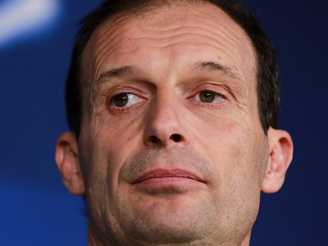

Parece ser que no estamos viendo al CR7 del Real Madrid. A pocos dias desde que inicio la liga italiana, Ronaldo no ha estado a las expectativas a las que nos tiene acostumbrados.
CR7 COMENTA SOBRE SU RENDIMIENTO
Luego del partido contra el Lazio, Ronaldo fue interrogado con respecto a su actuacion a lo que este respondio: "No estoy preocupado. Necesito tiempo para adaptarme al equipo ya que es un esquema nuevo que no es facil de comprender. Todo lo demas vendra a su tiempo." Estas palabras del numero 7 nos hacen creer que solo esta pasando por un mal momento y de que tiene plena seguridad que regresara a su modo usual de juego en poco tiempo.
ALLEGRI COMENTA AL RESPECTO
Al preguntarle al tecnico de la Juventus acerca del pobre rendimiento de su nuevo jugador estrella, este respondio diciendo que el sabe que tipo de jugador es Cris y que tiene la mayor fe que con paciencia puede llevar al equipo a nuevas alturas y a conseguir el titulo que siempre ha anhelado el club, la Champions League. El proximo partido sera el Sabado a las 3:30 contra el AC Milan.